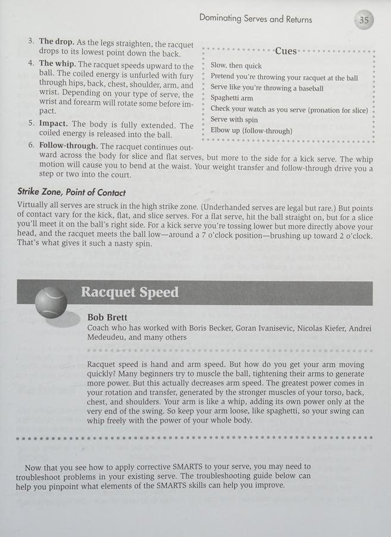

1. Hệ Thống Tennis SMARTS: Bộ Khung Chuẩn Mực Của Chuyên Gia
Trong cuốn sách kinh điển "Serious Tennis" do Human Kinetics xuất bản, chuyên gia Scott C. Williams đã đúc kết toàn bộ cơ chế thi đấu hiện đại thành một mô hình chuẩn mực mang tên "Tennis SMARTS". Sáu chữ cái đại diện cho sáu giai đoạn vận động không thể tách rời:
- S – Seeing (Quan sát nhạy bén): Nhận diện quỹ đạo bay, độ xoáy và điểm rơi của bóng ngay từ khi bóng rời mặt vợt đối phương. Khả năng đọc bóng sớm là điều kiện tiên quyết giúp cơ thể có thêm 0.3 giây vàng ngọc để chuẩn bị.
- M – Movement (Di chuyển linh hoạt): Thực hiện bước nhún tách chân (split step) bùng nổ, sau đó dùng các sải chân dài để rút ngắn cự ly tiếp cận khu vực bóng rơi.
- A – Adjusting (Căn chỉnh bước chân): Chuyển đổi từ sải chân dài sang các bước dặm nhỏ nhanh để tinh chỉnh khoảng cách tối ưu giữa thân người và tâm bóng.
- R – Rotation (Xoay thân tích lực): Xoay hông và khung vai để nén các nhóm cơ lõi (core) như một chiếc lò xo xoắn khổng lồ tích lũy thế năng đàn hồi.
- T – Transfer (Chuyển dịch trọng lượng): Đẩy mạnh từ chân sau, truyền động lực qua khớp gối và hông để dồn toàn bộ sức nặng cơ thể xuyên qua điểm tiếp xúc bóng.
- S – Swing (Vung vợt giải phóng): Thả lỏng cánh tay và cổ tay để đầu vợt xé gió vung theo quỹ đạo hình học chuẩn xác, kết thúc trọn vẹn qua vai đối diện.

Hình 1.2: Cơ học cú chạm đất: Tối ưu hóa độ mở của hông và gia tốc đầu vợt tạo lực xoáy cuộn topspin nặng cắm sâu vào sân.2. Tối Ưu Hóa Sức Mạnh & Độ Xoáy Cú Chạm Đất
Để tạo ra những cú đánh chạm đất uy lực từ vạch cuối sân mà không tốn sức, người chơi cần nắm vững nguyên lý chuỗi động học (kinetic chain):
- Cú thuận tay thế mở hiện đại (Modern Open-Stance Forehand): Hai bàn chân mở rộng song song với vạch cuối sân, đầu gối phải khuỵu sâu nén lực. Động lực được giải phóng bằng việc bật xoay hông bùng nổ, kéo theo cánh tay quất mạnh đầu vợt từ dưới lên trên.
- Cú trái tay đầm chắc: Dù đánh một tay hay hai tay, vai trước phải dẫn đường và đóng vai trò như một điểm tựa đòn bẩy vững chắc. Điểm tiếp xúc bóng phải được duy trì kiên định ở phía trước thân người.
Lời Khuyên Của Scott Williams
Nếu bạn thấy cú đánh của mình thiếu lực, đừng cố gồng cánh tay mạnh hơn. Hãy kiểm tra lại bước Chuyển dịch trọng tâm (Transfer) và Xoay thân (Rotation) trong mô hình SMARTS. Lực đánh đỉnh cao luôn bắt nguồn từ mặt đất và cơ lõi.